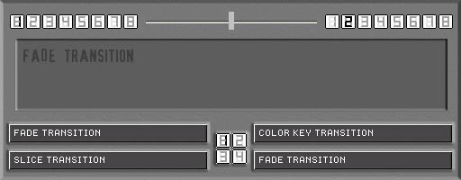
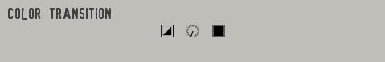
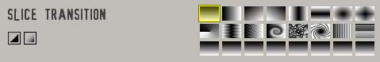

eleKtroniKa
help file
vmix module
mix
2 video stream using different transition type

inputs/outputs
8 video in
3 video out (1 master mix, 1 left input, 1 right input)
usage
buttons [1/2/3/4/5/6/7/8],
select the source input for left and right channel
cross fader, mix the two input selected (left/right)
lists, select the transition [1/2/3/4]
buttons [1/2/3/4], select the used transition
FADE TRANSITION
nothing special, just use
the cross fader
COLOR KEY TRANSITION

left/right, select the front channel
blur level
color key (see color button)
SLICE TRANSITION

left/right, select the front channel
blur
select the slice form
copyright aestesis
2003
www.aestesis.org